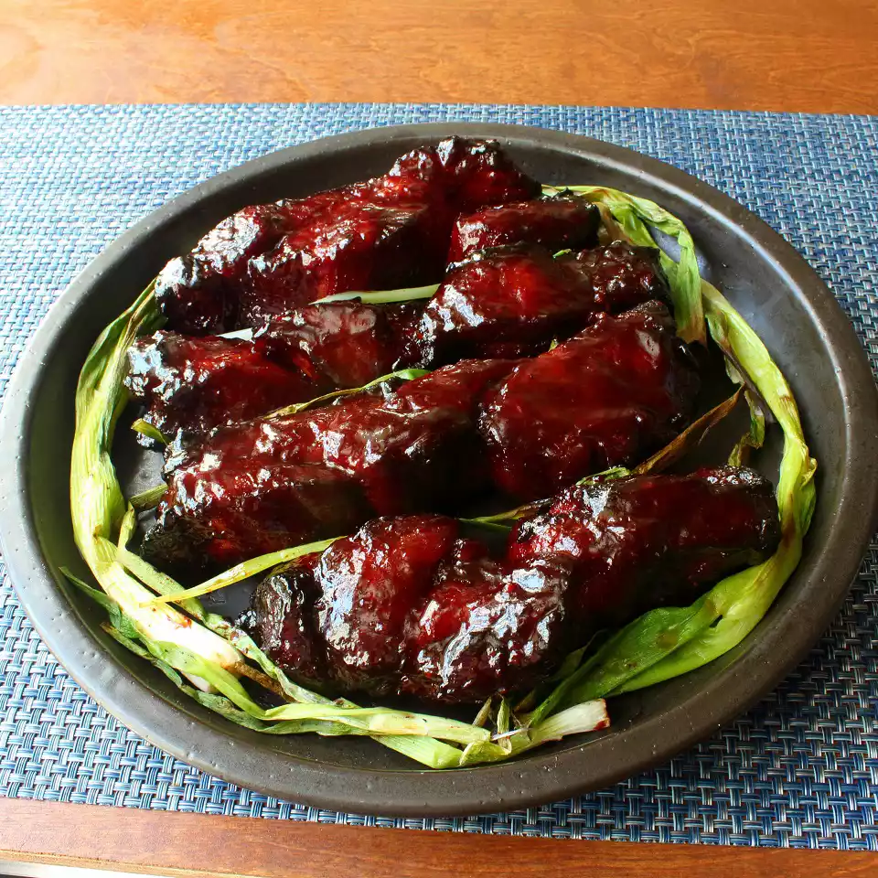

Home
Char Siu

This Chinese barbeque pork is glossy, deliciously savory, and quite easy to make at home — even without a fancy ceramic grill.
- Soy Sauce
- Honey
- Rice Wine
- Hoison
- Ketchup
- Brown Sugar
- Garlic
- Chinese 5 Spice Powder
- Ground Black Pepper
- Cayenne Pepper
- Pink Curing Salt
- Boneless Pork Butt
- Red Food Coloring
- Kosher Salt
- Simmer Sauce in Pan
- Cut Pork Lengthwise
- Add Food Coloring and Marinate Pork
- Preheat Grill to 300F
- Remove from Marinade
- Grill Pork
- Boil Remaining Marinade
- Brush Marinade onto Pork